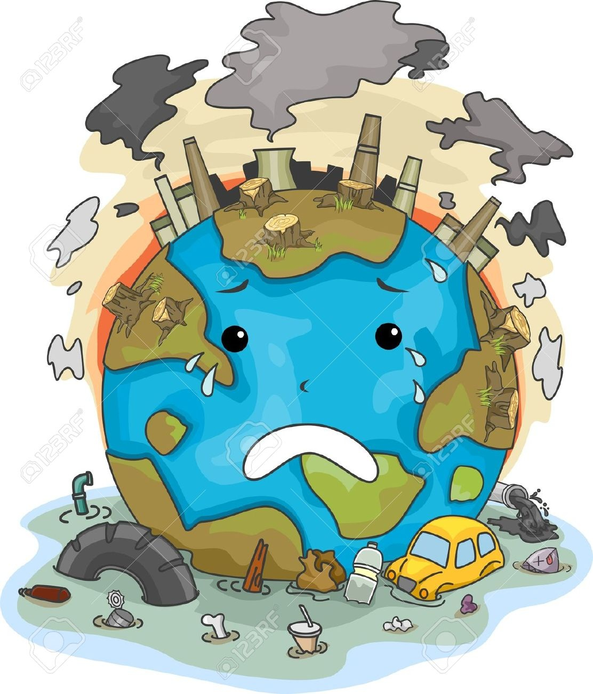

CONTAMINACIÓN

La contaminación es la introducción de sustancias en un medio que provocan que este sea inseguro o no apto para su uso.1 El medio puede ser un ecosistema, un medio físico o un ser vivo. El contaminante puede ser una sustancia química, energía (como sonido, calor, luz o radiactividad. La contaminación es siempre una alteración negativa del estado natural del medio, y por lo general, se genera como consecuencia de la actividad humana considerándose una forma de impacto ambiental.
cuando se incorpora al agua sustancias extrañas como microorganismos, productos químicos, residuos industriales o aguas residuales. Estos contaminantes hacen que el agua no sea beneficiosa para el ser humano ni para la vida vegetal y animal.
cuando se introduce material extraño y dañino en las capas terrestres. Estos contaminantes producen un desequilibrio físico, químico y biológico en el suelo.
se denomina a la adición de elementos tóxicos como el CO. Este tipo de contaminación afecta al bienestar de las personas, animales y plantas de forma negativa.

También llamada contaminación auditiva, es la contaminación por el ruido que molesta la tranquilidad y la salud de todos los seres vivos. El ruido lo causan muchas actividades humanas, coches, aviones, motores, máquinas industreiales, la música a lalto volumen, explosiones, la industria de la contrucción, etc.
Es la ruptura del equilibrio natural del paisaje por la gran cantidad de avisos publicitarios o colores que por su variedad e intensidad afectan las condiciones de vida de los seres vivos. La causan los letreros o anuancios publicitarios, los colores y luces intensos, y el crecimiento de la mancha urbana.
Es la contaminación del ambiente ocasinado por los desechos radiactivos. Pude ocurrir por un accidente o por el desecho no controlado de sustancias radiactivas a la basura. Los accidentes en plantas nucleares ha sido la principal causa de contaminación radioactiva
Es la contaminación por un exceso de luz en el ambiente causada por la iluminación en las ciudades
El tráfico rodado: los coches y camiones son los mayores contaminantes urbanos porque a diario circulan arrojando al aire gases tóxicos perjudiciales para la salud. Estos vehículos contaminan a causa de la combustión de los hidrocarburos que utilizan para moverse, y el desgaste de los frenos y ruedas.
La deforestación: la tala indiscriminada en bosques y selvas impide que los árboles, encargados de purificar el aire, realicen esta tarea y que miles de animales y plantas se extingan por no tener un lugar donde vivir y crecer.
El índice de población mundial ha crecido a distinto ritmo que la tasa de mortalidad, hecho que ha impactado sobre el medioambiente: provocando la ineficiencia en el tratamiento de las aguas residuales domésticas, el aumento del consumo irreflexivo y la generación de toneladas de basura.
Los Combustibles fósiles: el confort y el bienestar de los habitantes de las grandes ciudades trajo como consecuencia el aumento en el consumo de combustibles fósiles. La producción de carbón, de petróleo y de gas natural crece de la mano del ascenso de los niveles de contaminación del aire, del suelo y del agua del planeta.
Los pesticidas y los productos químicos utilizados en los cultivos llegan a contaminar el suelo y el agua de la zona en que se sembró. Llegando incluso a contaminar, de forma alarmante, a muchos alimentos.
La contaminación ambiental tiene serios efectos sobre la salud de las personas, pero también para el clima, el suelo, las plantas y los animales, con las consecuencias que acarrea.
Problemas para la salud: la contaminación hace que las personas estemos cada vez más expuestas a padecer problemas cardiovasculares, con el grave peligro que esto entraña para nuestra salud y vida.
Debilitamiento de la capa de ozono: la capa de ozono es la que nos protege de los rayos del Sol, los cuales pueden llegar a ser mortíferos sin esta capa. la consecuencia de este debilitamiento es que cada vez nos protege menos y, por ende, cada vez tenemos una mayor temperatura en el planeta. Esto no solo hace que cada vez haya más zonas desiertas en las que es imposible vivir, sino que también hace que el hielo en los polos se deshaga y mueran muchas especies por ello. No hace falta mencionar que esto hace subir indudablemente el nivel del mar y que, de seguir así, muchas ciudades costeras se verán arrasadas, quedándose sin playas y sin zona costera.
• La contaminación afecta al suelo y al agua: la contaminación al medio ambiente afecta al agua y al suelo, lo que hace que cada vez haya más especies en peligro de extinción. El agua no es potable en una gran cantidad de sitios y el suelo para la siembre no tiene los nutrientes necesarios, lo que hace que cada vez se pueda cultivar menos y que el número de cosechas para nuestro sustento sea cada vez menor.
Lamentablemente esta es la contaminacion del centro de Atlixco
reducir el uso de autos y usar mas la bicicleta.
salir a recolectar la basura de las calles, rio, lagos.
Hablar conciencia de lo que esta provocando el contaminar a nuestro planeta.
Poner botes de basura en las calles.
Reducir el uso de bolsas de plastico.